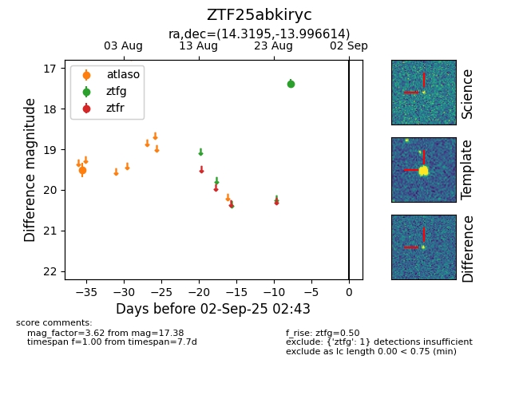

FINK: ZTF25abkiryc
Lasair: ZTF25abkiryc
ALeRCE: ZTF25abkiryc
ZTF25abkiryc (ztf,fink)
equatorial (ra, dec) = (14.3195,-13.99661)
galactic (l, b) = (129.1465,-76.79784)

last atlaso=19.51, ztfg=17.38
1 atlaso, 1 ztfg detections